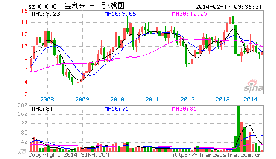

庄家这种动物对大多数人来说很神秘，对本ID来说就太稀松平常了。庄家和散户这种二元对立，大概比较适合现代中国人的思维模式，因此就变得如此的常识，但常识往往就是共同谬误的同义词，不仅是所谓的散户，而且很多的所谓庄家，也就牺牲其中。
一般定义中的所谓庄家，就是那些拿着大量资金，能控制股票走势的人。在有关庄家的神话中，庄家被描述成无所不能的，既能超越技术指标、更能超越基本面，大势大盘就更不在话下了。这里说的还只是个股的庄家，至于国家级的庄家，更成了所谓散户的上帝。关于这些庄家上帝的传闻在市场中一秒钟都不曾消停，构成了常识的谬误流播。
但所谓的庄家，前赴后继，尸骨早堆成了山。前几天在一个私人聚会里，还碰到一个50年代的老大叔，说已经准备了二十亿，要坐庄，让本ID去联系一下某某公司的头。那人也是有头有脸的人了，不想当众奚落他，暗地里把他嘲笑了一番，简直是脑子锈着了。
当然，即使庄家的神话已经如此常识，这种傻人还是一直、也会继续前赴后继的。而正因为这种傻人如此的多，猎人打起猎来才能收获丰富。看到越摆庄家谱的，猎人就越高兴，反正这类型的，基本在市场上混个几年就基本尸骨无存了。
市场没有什么庄家，有的只是赢家和输家！有的只是各种类型的动物，还有极少数的高明猎手。市场就是一个围猎的游戏，当你只有一把小弓箭，你可以去打野兔；当你有了屠龙刀，抓几条蛇来玩当然就没劲了，关键你是否有屠龙刀！